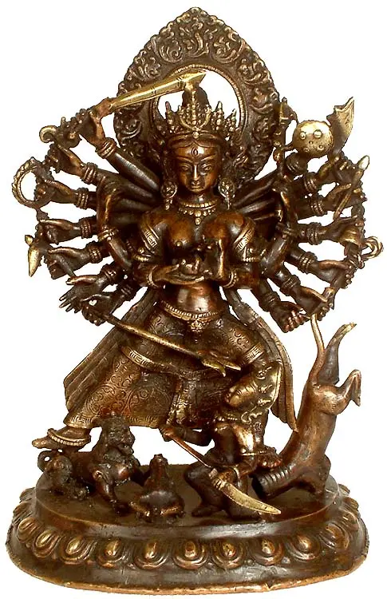

Hindu Weddings
Complete Guide to Hindu Wedding Rituals in Kerala
From Nichayathartham to Sadya — understand each sacred ritual and what it means for your family's celebration.

Temple & Culture
Pallipparambukavu Bhagavathy Temple: History & Significance
Discover the rich spiritual heritage of the revered Bhagavathy Temple that stands at the heart of Tripunithura.

Event Planning
How to Choose the Perfect Wedding Hall in Kerala
A practical checklist covering capacity, catering, location, and ambience to help you book the right venue.

Hindu Weddings
Thirukalyanam: The Sacred Hindu Wedding Ceremony Explained
A deep dive into the Thirukalyanam ceremony — its spiritual meaning, the mantras chanted, and the roles of each family member.
.jpg)
Temple & Culture
The Nair Community & Tripunithura: A Cultural Overview
Explore the rich traditions, customs, and social history of the Nair community in Tripunithura and its influence on local culture.

Event Planning
Kerala Wedding Season: Best Dates & Muhurtham Guide 2025
Plan your wedding around the most auspicious Hindu calendar dates and understand why the Kerala wedding season runs from November to February.